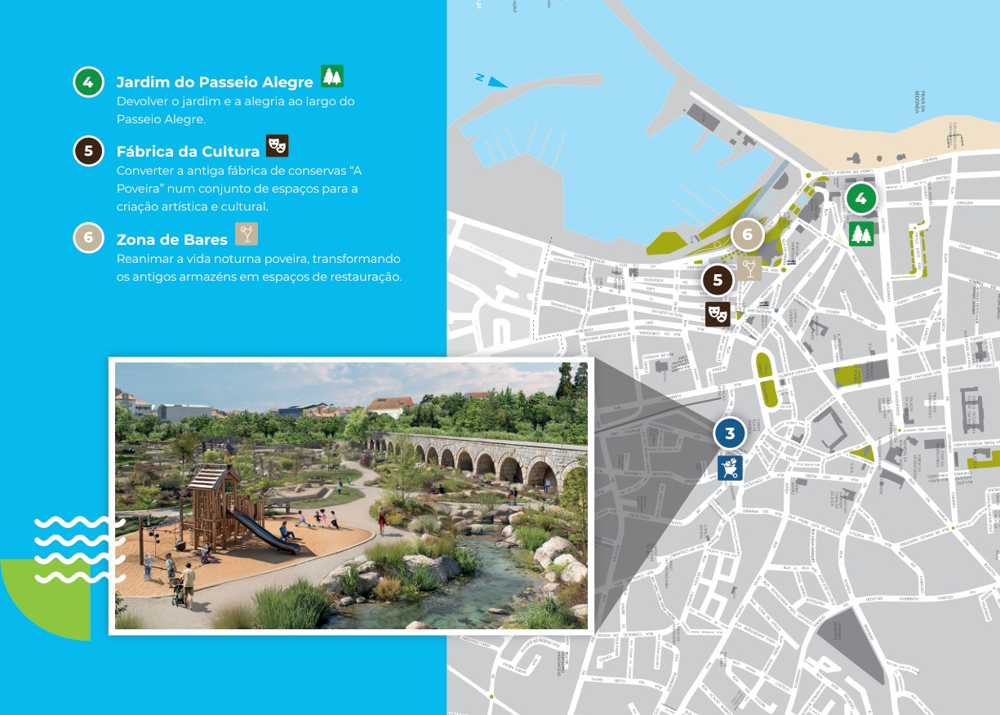

Balasar Argivai Amorim Navais
Laúndos Terroso Aguçadoura
Rates Póvoa Estela Beiriz
Aver-o-Mar
A Aliança Poveira é uma candidatura independente, livre e plural. É
composta por gente da nossa terra, cidadãos independentes, com percurso
e currículo comprovados, experiência política e energia renovada, que se
unem por um futuro melhor para a nossa Póvoa. Neste folheto
apresentamos as soluções de bom senso que vão fazer da Póvoa de Varzim
um concelho melhor para viver, trabalhar e estudar. No dia 12 de outubro,
vote como um poveiro. Vote na mudança que vai sentir na sua vida.
Economista, licenciado pela Faculdade de Economia do
Porto e pós-graduado pela Porto Business School, com
22 anos de experiência no setor privado. Atualmente é
Diretor Financeiro de uma empresa industrial com cerca
de 200 trabalhadores. É vereador sem pelouro na
Câmara Municipal da Póvoa de Varzim e foi deputado
municipal durante oito anos.
ALIANÇA POVEIRA?
O QUE É A
JOÃO TROCADO
Candidato a Presidente da Câmara
Municipal da Póvoa de Varzim
6. Paulo Eça Guimarães
Engenheiro Zootécnico, mestre em
Extensão e Desenvolvimento Rural, é
docente universitário e técnico
superior com vasta experiência em
desenvolvimento rural e políticas
agrícolas. Investigador, autor e
consultor, alia conhecimento
científico à prática na promoção do
desenvolvimento territorial e agrícola.
VEREADORES
CANDIDATOS
2. Andreia Teixeira
Assistente social com 17 anos de
experiência na Póvoa de Varzim,
especializada na intervenção
com crianças, jovens e famílias.
Atualmente Técnica Superior no
Agrupamento de Escolas de
Aver-o-Mar, alia formação
avançada a experiência prática e
comunitária.
3. Miguel Nascimento
Licenciado em Direito, gestor de
inovação social e empresário,
coordenou a candidatura de Vila
do Conde a Capital Europeia da
Juventude 2026. Destaca-se pelo
percurso no associativismo e na
participação cívica.
4. Cristiana Fernandes
Médica de família, natural de
Argivai, foi deputada municipal
entre 2013 e 2021. Combina o
conhecimento do setor da saúde
com experiência política e
desportiva, tendo representado o
concelho como atleta do Clube
Desportivo da Póvoa.
5. Hugo Pinheiro
Engenheiro Civil, na área da
construção e promoção
imobiliária, com percurso escolar
e profissional fortemente ligado
à Póvoa de Varzim. Ex-atleta de
basquetebol e hóquei em patins,
alia conhecimento técnico, visão
para o desenvolvimento urbano
e sentido cívico.
7. Paula Martins
Oficial de justiça há 26 anos, com
experiência organizacional e
conhecimento de procedimentos
administrativos e jurídicos. Envolvida
em atividades comunitárias e
culturais, tem uma forte ligação
direta às pessoas e à vida quotidiana
da cidade.
8. Cristiano Araújo
Engenheiro Zootécnico, com
experiência em distribuição,
produção alimentar e, mais
recentemente, produção de eventos
internacionais. Empreendedor e
habituado à gestão logística e
operacional.
9. Beatriz Barroso
Psicóloga, mestre em Psicologia das
Organizações e pós-graduada em
Psicologia Política. Técnica Superior
de Mediação Social no apoio a
pessoas com deficiência grave, com
competências de articulação
institucional e inclusão.
A nossa equipa

6
4
5
3
Jardim do Passeio Alegre
Devolver o jardim e a alegria ao largo do
Passeio Alegre.
Fábrica da Cultura
Converter a antiga fábrica de conservas “A
Poveira” num conjunto de espaços para a
criação artística e cultural.
Zona de Bares
Reanimar a vida noturna poveira, transformando
os antigos armazéns em espaços de restauração.
6
4
5
2
1
VEJA AQUI O
PROGRAMA COMPLETO
PARA TODO O CONCELHO
Desnivelamento da Rotunda Oval -
Túnel de Acesso à Cidade
Construir um túnel no sentido nascente-poente
para desafogar o trânsito
Jardim da Arena e
Estacionamento Subterrâneo
Estacionamento para 500 carros, em cave e
sub-cave, libertando o espaço à superfície para um
novo jardim para as pessoas
Parque Central da Póvoa
Novo espaço verde com 6000 m2 entre a Praça do
Almada e a estação do Metro, recuperando o
antigo Aqueduto do Coelheiro.
1
2
3
Maria da Luz
Oliveira
Gonçalo Angeiras
Feliciano Correia
Cristiana Vale
Diana Campos
Pedro Costa
Jacinta Sampaio
Manuel Vieira
Inês Ruano
de Castro
Pedro Miguel
Salazar
Diana Carvalho
António Moreira
Maria Luis Santos
Pedro Ortiga
Teresa Maio
Rui Lira
Joana Extremina
Silvina Carvalho
Fernando Faria
Tomás Costa
Catarina Barroso
Tomás Barbosa
Jorge Lopes
Conceição Marques
Rui Pinto
Ivan Santos
MUNICIPAL
ASSEMBLEIA
Candidatos a Deputados Municipais
Candidato a Presidente da Assembleia
Municipal da Póvoa de Varzim
Desde 1974 que se tornou ativo politicamente na
defesa das liberdades, destacando-se pelo percurso
cívico, associativo e empresarial. Foi membro da
Assembleia de Freguesia da Póvoa de Varzim em
1979 e deputado municipal entre 2005 e 2013.
Profissionalmente, é comercial de ourivesaria desde
1977 e empresário com fabrico próprio desde 1987,
tendo ainda integrado por duas vezes a direção da
Associação Empresarial da Póvoa de Varzim.
David Sá
Soluções de
Bom Senso
para a nossa Povoa!
3 novos espaços
verdes no centro
Resolver o caos
da rotunda da
entrada na cidade
Estacionamento em
cave e subcave junto
à Póvoa Arena
Rede municipal
de creches
Refeições escolares
gratuitas e de
qualidade
Fique a par do programa
completo para todo o concelho em
aliancapoveira
.
pt